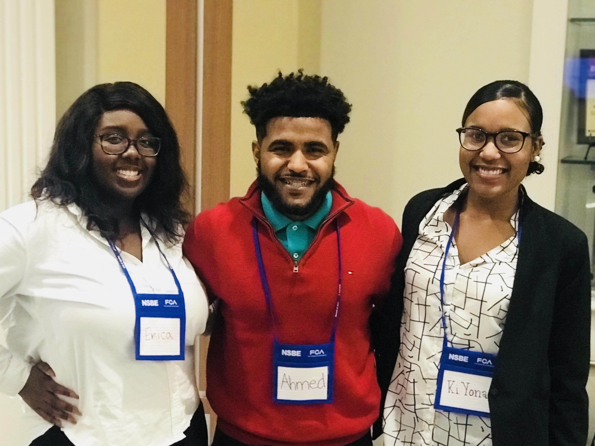
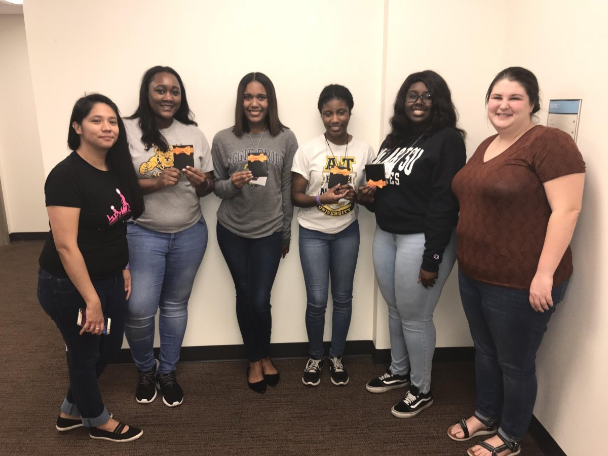
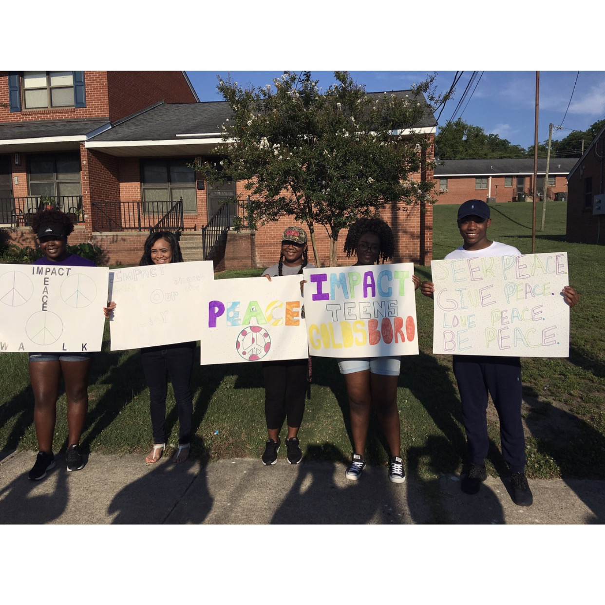
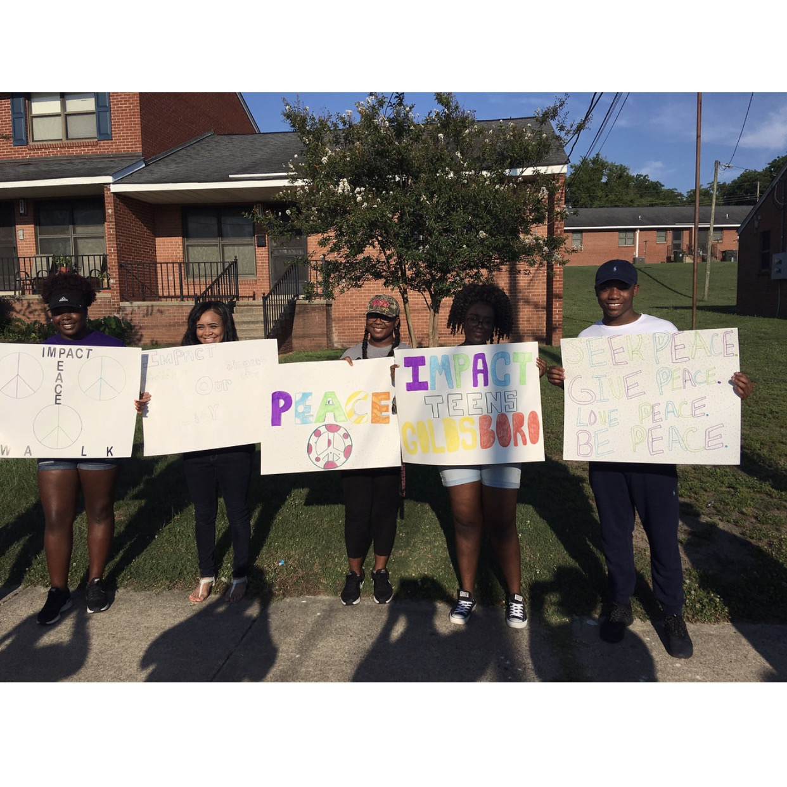
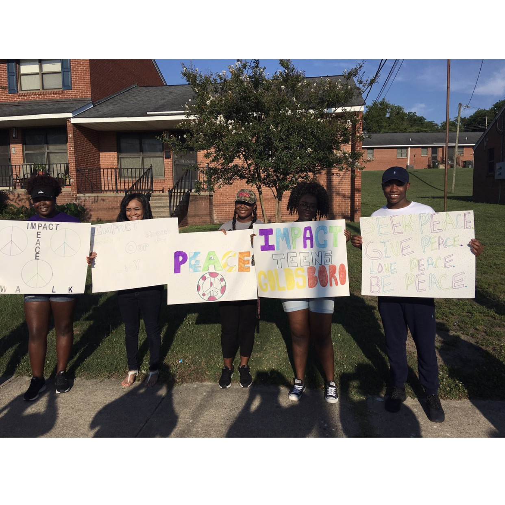

Honors and Activities


 



Growing up in a small town grows character. Your sense of community is tested everyday. You can either decide to help make it a better place, or to make it worse. A problem that I've noticed in my community is the lack of knowledge underrepresented and inner city students have about their future. After reflecting over my 5 years worth of volunteer and work experience at various after school programs, I noticed most students believed college was something way out of their reality. Most of these students even seemed to act out in school because of this belief, they didn't see any point in doing good in school if their family didn't have the funds to pay for college. This, along with more of my passions, is why I do what I do.
Below are some of my favorite Honors and Activities:
Hackathons
Hackathons are DEFINITELY new territory for me. My colleagues and I have been trying to find more ways to get involved and brand ourselves off campus. We participated in the 2018 all girls Major League Hackathon Pearl Hacks. After long hours of coding and only 2-3 hours of sleep, we demoed our website and app to multiple companies, winning CapTech's Most Community Impact. Whenever we work on websites, we split up our assignments by webpages. For example, I completed the Portal and Opportunites page. When everyone was done with their portion of website, they sent their files to me, where I proofread and made sure all the links connected to each page. I then uploaded our website to GitHub and Devpost for my first time. I will be more than happy to speak with you about it!
Impact Teens Goldsboro
ITG is a youth-led nonprofit organization where I am proud to serve as Vice President. It was founded by two close friends of mine after an onslaught of repeated gun violence, in which teenagers were victims of gun fire. This was my first time experiencing the trials and errors of a start up. Luckily, we created a good name for ourselves after a great summer of hosting our first Peace Walk, City-Wide Prayer Vigil, and Kickball Tournament for our community.
Innovation Challenge
My freshman year, my team and I won 1st Place in the 2017 School of Science and Technology Innovation Challenge. This competiton allows freshmen to form teams and come up with an innovation, collect research and data, and present their idea to a panel of judges and their peers. I will be more than happy to speak with you about it!
CIP II Mentor
The summer of 2017, I volunteered at Wayne County Prevention and Treatment Center's Community Intervention Program II. The Community Intervention Program II focuses on serving at-risk girls aged 11-14. Students are referred by their principal and or guidance counselor. CIP II offers a curriculum that focuses on helping girls build leadership skills like self-reflection, critical thinking, sound decision making, goal setting, clear communication, and personal accountability. I enjoyed being a more relatable mentor, most of the girls referred to me as their big sister by the end of the summer.